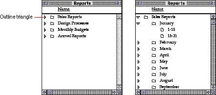

|
Outline TrianglesThe outline triangle in the Finder is a control that users see when they choose to display the contents of their file system in a list view. The triangle appears next to folders that contain documents. The user clicks the triangle to display a list of the contents of the folder without actually opening it. The triangle then rotates to point downward. This change in position indicates to the user that the folder's contents are listed. Figure 7-18 shows the outline triangle in both positions.Figure 7-18 Outline triangle control  |